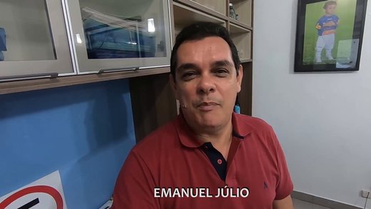

00:00:03.971
Emanuel Júlio aparece de camisa vermelha em uma sala, com armários e um quadro ao fundo.
Local não identificado
Ele apresenta o episódio sobre o avanço da maré em Belém e Salinópolis em março de 2019.
Transcrição · 00:00:00 | 00:00:05 | 00:00:12
Turismo Aqui — quadro de vídeo publicado no YouTube